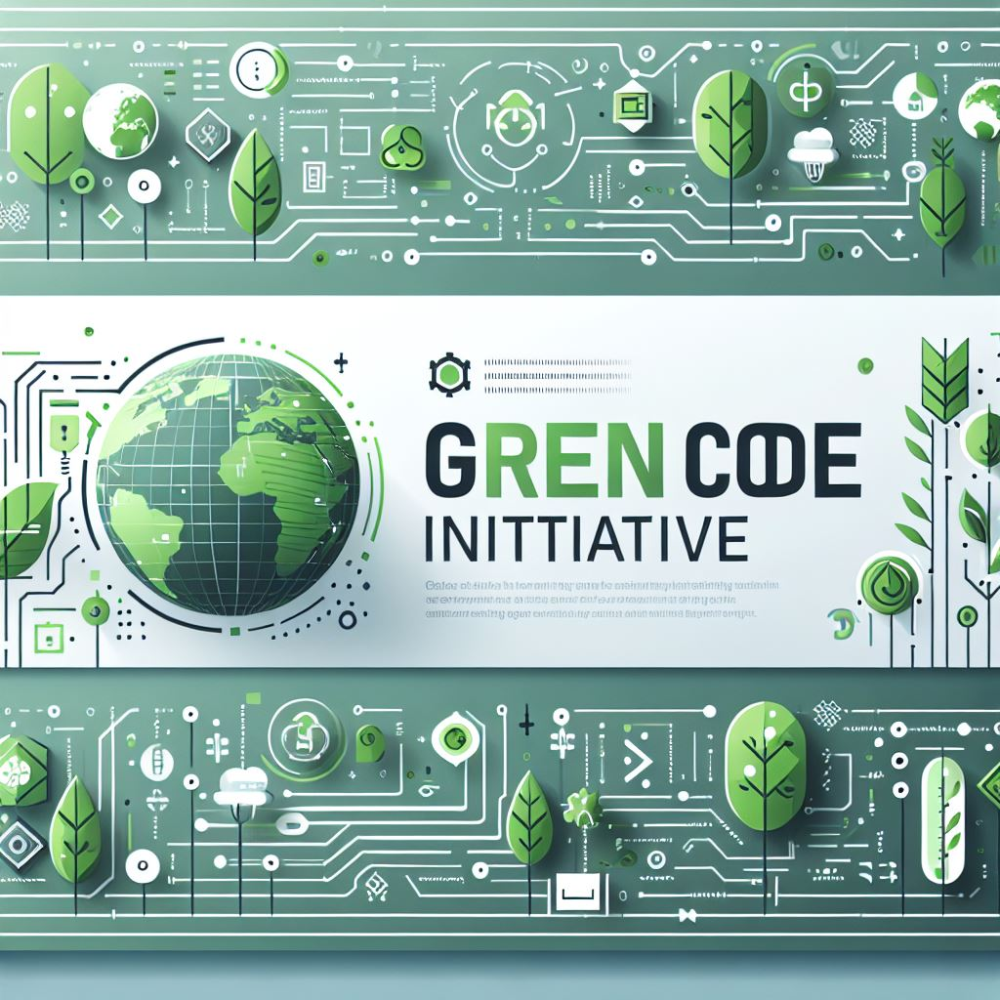

Om oss
Velkommen til Grønn Kode Prosjektet, et studentledet initiativ med fokus på å fremme
bærekraftige kodingspraksis. Vi er en gruppe på seks studenter fra Universitetet i
Sørøst-Norge, som for tiden jobber med et prosjekt som en del av våre studier i
PRO1000.
Våre mål
- Lære ved å gjøre: Dette prosjektet gir oss muligheten til å få praktisk
erfaring med prosjektarbeid, noe som lar oss anvende teoretisk kunnskap i en virkelig
kontekst.
- Prosjektledelse: Vi videreutvikler våre ferdigheter innen prosjektplanlegging, teamarbeid og
gjennomføring, noe som forbereder oss på fremtidige profesjonelle utfordringer.
- Øke bevissthet: Ved å dele våre funn og innsikt, håper vi å inspirere andre til
å ta i bruk bærekraftige kodingspraksis og bidra til en grønnere teknologiindustri.
Hvorfor grønn koding?
Teknologiindustrien er en betydelig bidragsyter til globalt energiforbruk og karbonutslipp. Ved å
ta i bruk prinsipper for grønn koding, kan vi:
- Optimalisere programvare for å bruke mindre ressurser.
- Forlenge levetiden til maskinvare ved å redusere beregningskravene.
- Minimere det miljømessige fotavtrykket til digitale applikasjoner.
Bli med oss på vår reise
Vi inviterer deg til å utforske våre blogginnlegg, verktøy og ressurser for å lære mer om grønn koding og dens påvirkning.
Sammen kan vi gjøre en forskjell og skape en mer bærekraftig fremtid for teknologi.